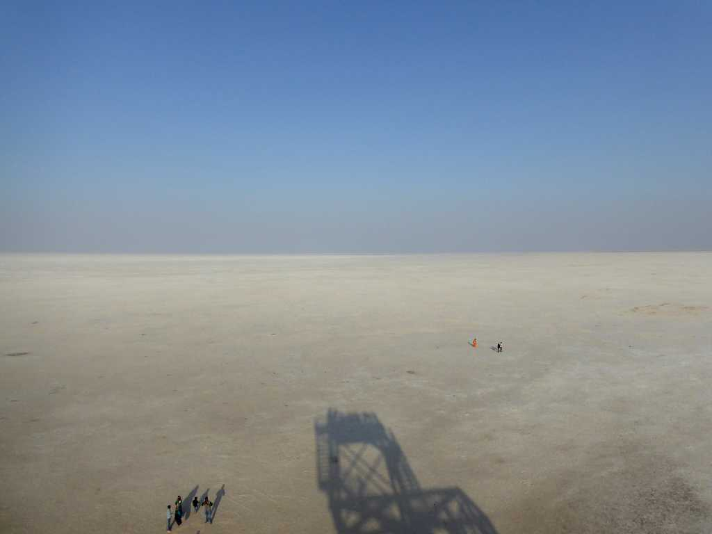
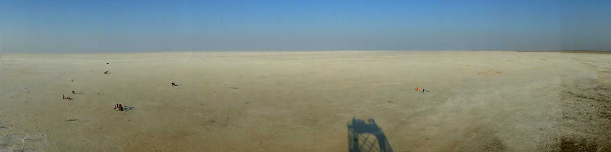
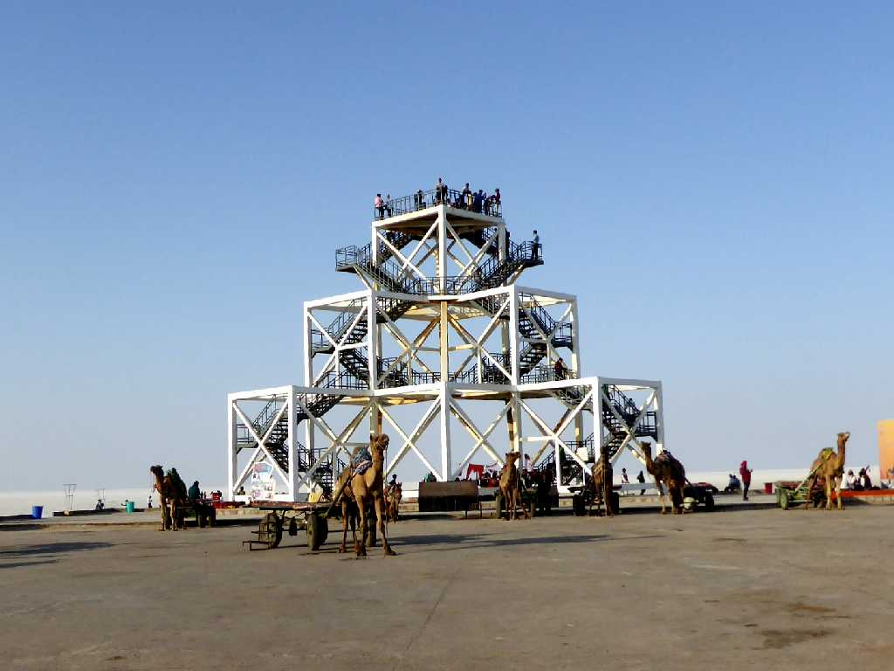
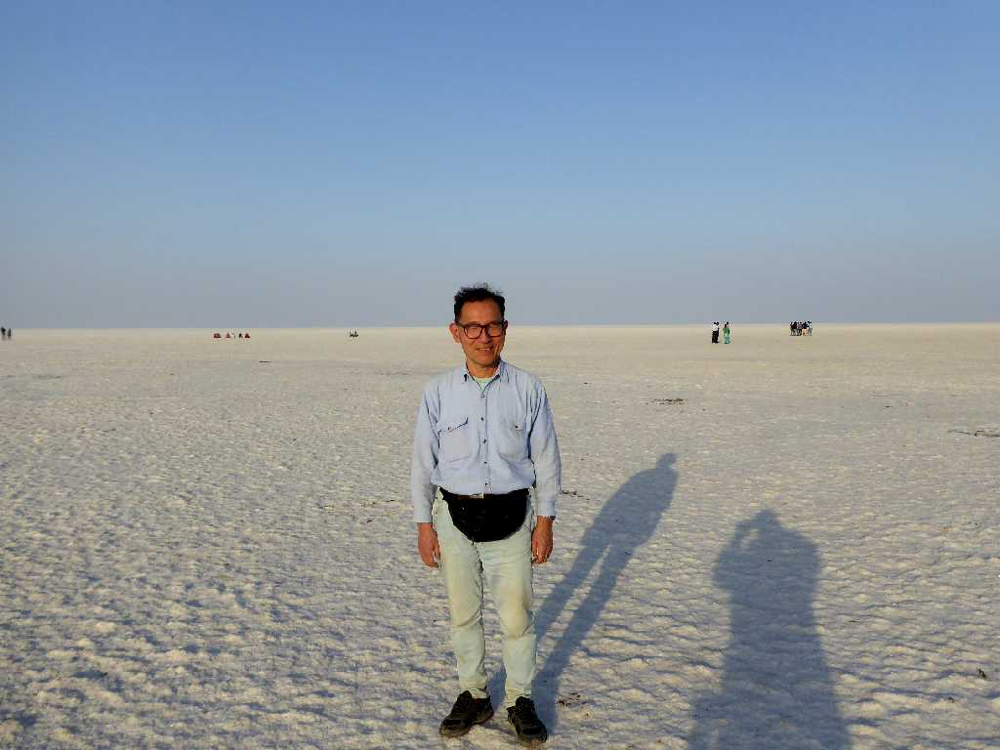
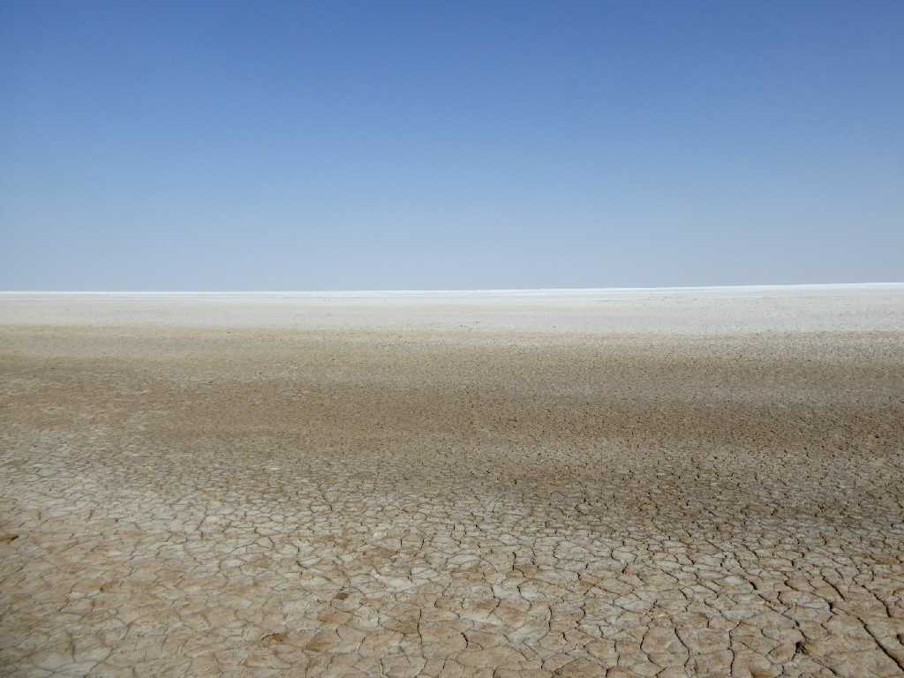
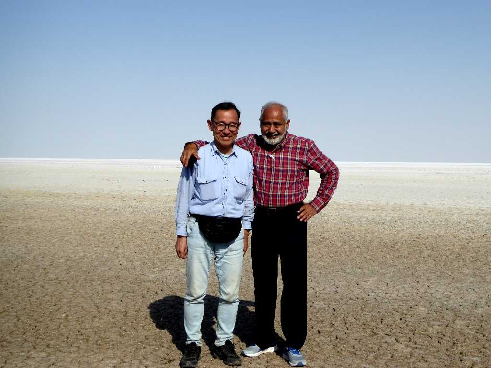

White Rann (White Desert) Kutch
大カッチ湿地の白砂漠と云われる塩の平原

Salt White Rann
塩の砂漠は７,５０５㎢におよび世界一の広さとなっている

Tower White Rann

January 24 2018 White Rann

White Rann near Dholavira
展望台から約３００ｋｍほど走ったドーラビーラ遺跡近くの塩の砂漠

January 25 2018 White Rann near Dholavira